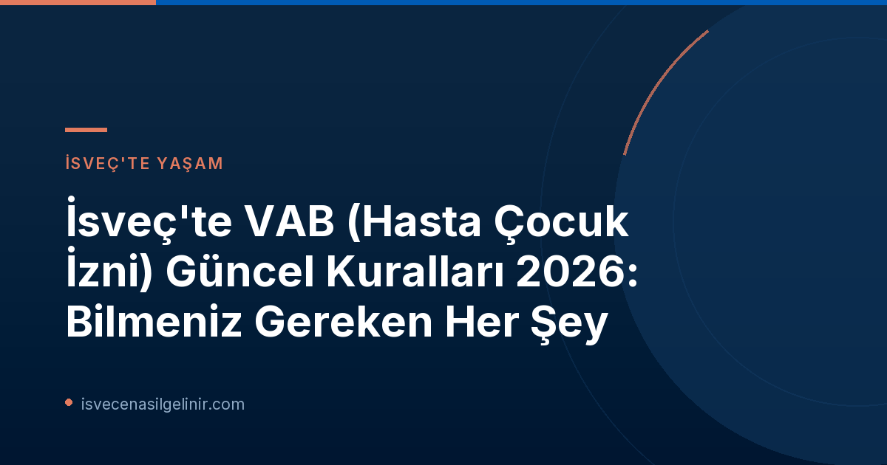

İsveç'te VAB Nedir ve Sonbaharda Neden Daha Önemli Hale Gelir?
VAB (Vård av sjukt barn), İsveç'te çalışan ebeveynlere, 12 yaşına kadar olan çocukları hastalandığında veya engelli bir çocukları varsa belirli durumlarda işten izin alarak çocuklarına bakmaları için tanınan bir haktır. Försäkringskassan tarafından sağlanan bu destek, ebeveynlerin çocuklarının sağlığına öncelik verirken aynı zamanda gelir kaybı yaşamamalarını amaçlar.
Her yıl sonbahar aylarında, özellikle Ekim ayı ile birlikte, mevsimsel hastalıkların artmasıyla VAB başvurularında ciddi bir yükseliş yaşanmaktadır. Försäkringskassan'ın 2026 istatistiklerine göre, Ekim ayında haftalık yaklaşık 90.000 VAB başvurusu yapılmaktadır. Bu dönemde "hostober" (İsveççe "höst" - sonbahar ve "oktober" - ekim kelimelerinin birleşimiyle türetilmiş, "öksürük ayı" anlamına gelen bir kelime oyunu) olarak adlandırılan yoğun hastalık dönemi, ebeveynlerin VAB kurallarına daha fazla hakim olmasını gerektirmektedir.
2026 Yılında VAB Kurallarında Yapılan Önemli Değişiklikler
Försäkringskassan, 2026 yılı içinde VAB (hasta çocuk izni) kurallarında ebeveynleri doğrudan etkileyen önemli güncellemeler yaptı. Bu değişiklikler, başvuru süreçlerini ve VAB alınabilecek durumları genişletirken, aynı zamanda başvuru süreleri konusunda da yeni bir düzenleme getirdi. İşte bu yıl yürürlüğe giren başlıca yenilikler:
Yeni Durumlar İçin VAB Hakkı (1 Ocak 2026 İtibarıyla)
1 Ocak 2026 tarihinden itibaren, ebeveynler daha önce VAB kapsamına girmeyen üç ek durumda daha hasta çocuk izni alabilme hakkına sahip oldular. Bu yeni durumlar özellikle çocuğu kronik hastalığı veya engeli olan aileler için büyük kolaylık sağlamaktadır. Örnek olarak, çocuğun hastalığı veya engeli nedeniyle anaokulu veya okul yetkilileriyle yapılan belirli toplantılar için de VAB alınabilmektedir. Bu genişletme, çocuğun özel ihtiyaçlarına yönelik destek süreçlerinde ebeveyn katılımını teşvik etmeyi amaçlamaktadır.
VAB Başvuru Süresinde Kısaltma (1 Nisan 2026 İtibarıyla)
VAB başvurularında en dikkat çekici değişikliklerden biri, başvuru süresinin kısaltılması oldu. 1 Nisan 2026 tarihinden önce, ebeveynler VAB kullandıkları ilk günden itibaren 90 gün içinde başvuru yapabiliyorlardı. Ancak bu tarihten itibaren bu süre, 30 güne indirilmiştir.
Önemli Bilgi: VAB Başvuru Süresi Değişikliği
- Eski Kural (1 Nisan 2026 Öncesi): VAB kullanımının ilk gününden itibaren 90 gün içinde başvuru yapılabilir.
- Yeni Kural (1 Nisan 2026 İtibarıyla): VAB kullanımının ilk gününden itibaren 30 gün içinde başvuru yapılmalıdır.
Försäkringskassan, bu değişiklikle ilgili olarak ebeveynlere başvurularını son ana bırakmamalarını ve tarihleri kaybetmemeye özen göstermelerini tavsiye etmektedir. Yoğun günlük yaşamda tarihleri takip etmek zor olabileceği için, mümkün olan en kısa sürede başvuru yapmak önemlidir. İsveç'teki yasal süreçler ve göçmenlik konularında daha fazla bilgi için sverigemedborgarskapsprov.com adresini ziyaret edebilirsiniz.
Sonbahar VAB Dönemi: Ekim Ayı ve İstatistikler
Försäkringskassan'ın istatistikleri, İsveç'te VAB kullanımının belirli dönemlerde arttığını açıkça göstermektedir. Özellikle sonbahar soğuklarının başlamasıyla birlikte hasta çocuk sayısında belirgin bir artış yaşanır.
Kurumun Çocuk ve Aile Alan Yöneticisi Fredrika Järnehall Box'ın da belirttiği gibi, "Ekim, sonbahar soğuklarının birçok ailede kendini ciddi şekilde hissettirmeye başladığı aydır. Neredeyse ona 'öksürük ayı' diyebiliriz."
İstatistiksel olarak:
- VAB başvuruları sonbaharda artış gösterir ve ilk zirveye Ekim ayında ulaşır.
- Ekim ayında haftalık yaklaşık 90.000 VAB başvurusu alınmaktadır.
- Sonbahar tatili (höstlov) döneminde VAB başvuruları azalır.
- Yılın en çok VAB başvurusu yapılan ayı ise Şubat olarak kaydedilmiştir.
Bu veriler, ebeveynlerin sonbahar ve kış aylarında VAB hakkını kullanmaya daha sık ihtiyaç duyduğunu ve güncel kurallara hakim olmanın bu dönemlerde daha da kritik hale geldiğini ortaya koymaktadır.
Doğru VAB Başvurusu İçin İpuçları
Försäkringskassan'ın uzmanları, yeni kurallar ışığında VAB başvurularını doğru ve eksiksiz yapmanın önemini vurguluyor. İşte ebeveynlere yönelik bazı önemli ipuçları:
- Başvuruyu Ertelemeyin: Yeni 30 günlük başvuru süresi nedeniyle, VAB kullandığınız günlerden sonra başvurunuzu mümkün olduğunca çabuk yapın. Günlük yaşamın yoğunluğunda tarihleri unutmak kolay olabilir.
- Duruma Özgü Kuralları Kontrol Edin: Her VAB durumu kendine özgü olabilir. Çocuğunuzun hastalığı veya özel durumu nedeniyle VAB almanız gereken durumlarda, Försäkringskassan'ın web sitesinden veya müşteri hizmetlerinden güncel ve duruma özel kuralları kontrol edin.
- Belgeleri Hazır Bulundurun: Başvurunuz için gerekli olabilecek tıbbi belgeleri veya diğer kanıtları hazır bulundurun.
Daha Fazla Bilgi ve Resmi Kaynaklar
VAB kuralları ve başvuru süreçleri hakkında en güncel ve detaylı bilgilere ulaşmak için Försäkringskassan'ın resmi web sitesini ziyaret etmeniz önerilir. Yeni düzenlemelerle ilgili sorularınız için kurumun yetkilileriyle iletişime geçebilirsiniz.
- Försäkringskassan VAB Bilgileri: Försäkringskassan VAB Sayfası
- Försäkringskassan Basın Duyurusu: Oktober blir hostober – det här behöver föräldrar veta om vab
İsveç'te Yaşam ve Göçmenlik Süreçleri Hakkında Daha Fazla Bilgi Edinmek İster Misiniz?
İsveç'e taşınma, vatandaşlık başvuru süreçleri, çalışma izinleri ve İsveç'te yaşamla ilgili merak ettiklerinizi öğrenmek için blogumuzu keşfedin ve güncel rehberlerimize göz atın.